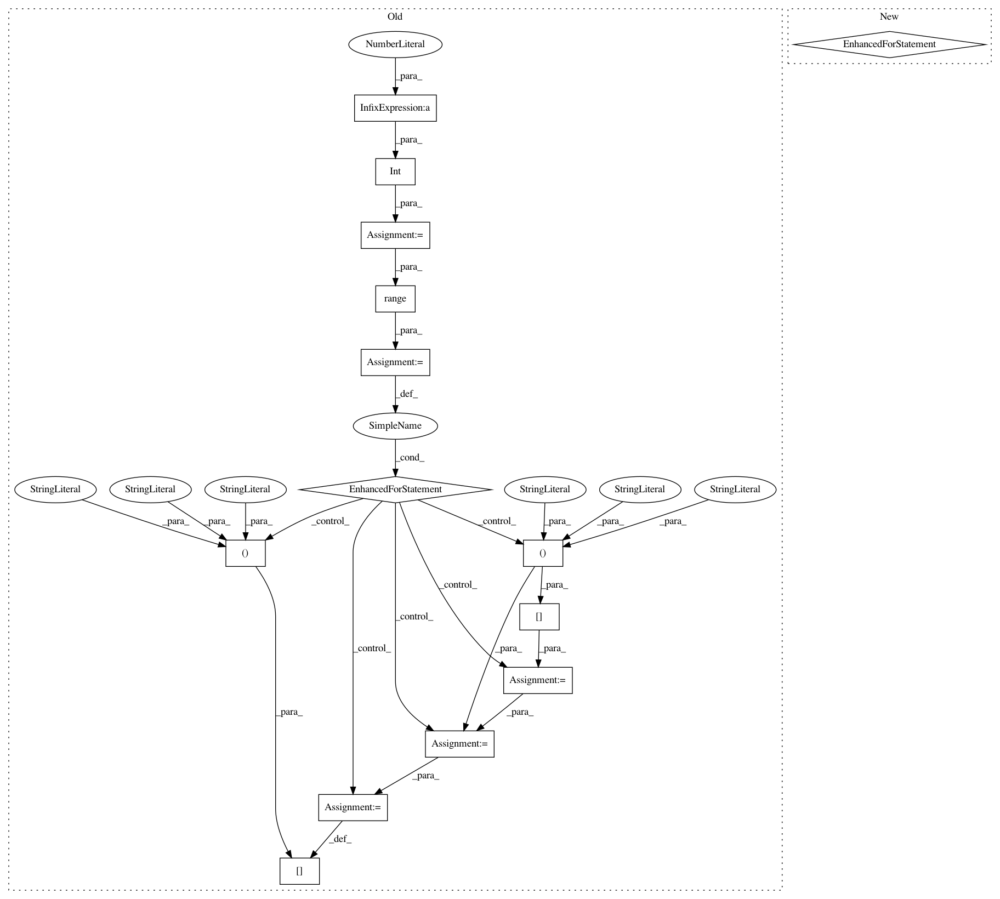

fdd55d36c05c747643fc98430a7f9b787b6cec16,gluoncv/data/transforms/video.py,VideoCenterCrop,forward,#VideoCenterCrop#Any#,264
Before Change
assert(crop_img.shape == (th, tw, 3))
scaled_clips[:, :, frame_id*3:frame_id*3+3] = crop_img
else:
num_imgs = int(c / 1)
for frame_id in range(num_imgs):
cur_img = clips[:, :, frame_id:frame_id+1]
crop_img = cur_img[y1:y1+th, x1:x1+tw, :]
assert(crop_img.shape == (th, tw, 1))
scaled_clips[:, :, frame_id:frame_id+1] = crop_img
return scaled_clips
class VideoTenCrop(Block):
After Change
scaled_clips = nd.zeros((th, tw, c))
num_imgs = int(c / 3)
for frame_id in range(num_imgs):
cur_img = clips[:, :, frame_id*3:frame_id*3+3]
crop_img = cur_img[y1:y1+th, x1:x1+tw, :]
assert(crop_img.shape == (th, tw, 3))
scaled_clips[:, :, frame_id*3:frame_id*3+3] = crop_img
return scaled_clips
class VideoTenCrop(Block):
Crop 10 regions from an array.
In pattern: SUPERPATTERN
Frequency: 3
Non-data size: 14
Instances
Project Name: dmlc/gluon-cv
Commit Name: fdd55d36c05c747643fc98430a7f9b787b6cec16
Time: 2019-08-29
Author: yizhu59@gmail.com
File Name: gluoncv/data/transforms/video.py
Class Name: VideoCenterCrop
Method Name: forward
Project Name: dmlc/gluon-cv
Commit Name: fdd55d36c05c747643fc98430a7f9b787b6cec16
Time: 2019-08-29
Author: yizhu59@gmail.com
File Name: gluoncv/data/transforms/video.py
Class Name: VideoMultiScaleCrop
Method Name: forward
Project Name: dmlc/gluon-cv
Commit Name: ee602b6f68f0bdd19f449a86955697f8f0a2d54c
Time: 2019-09-21
Author: yizhu59@gmail.com
File Name: gluoncv/data/transforms/video.py
Class Name: VideoCenterCrop
Method Name: forward